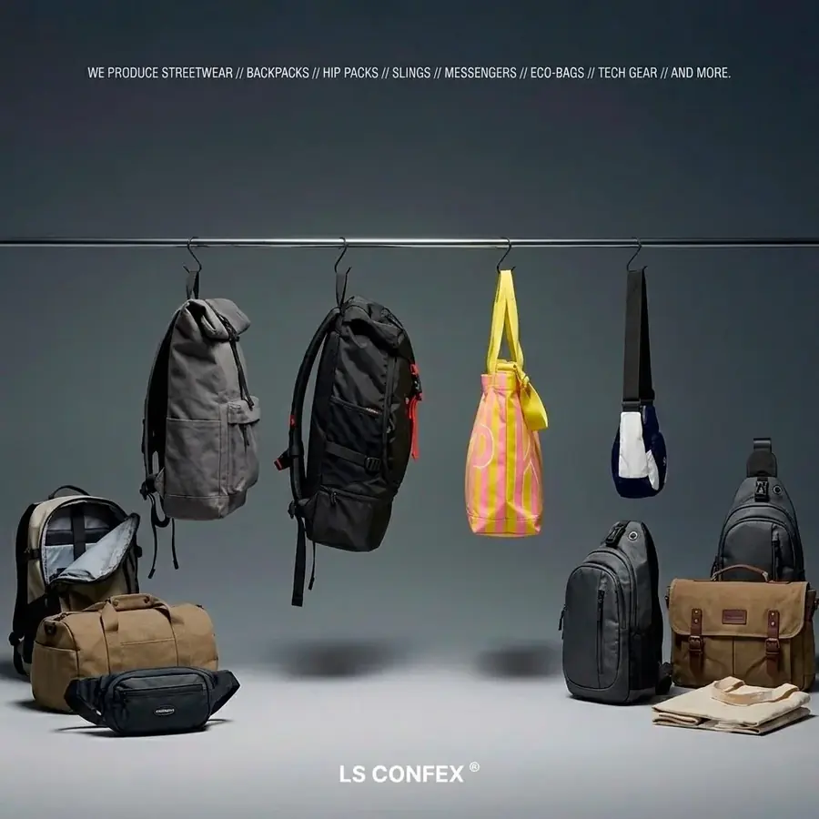

Private label (marca própria) é o modelo em que uma fábrica produz o item e a sua empresa vende com a sua marca. Você define posicionamento, design e canais de venda. A fábrica cuida de modelagem, corte, costura, aplicação da marca e inspeção final.
Para bolsas, mochilas, pochetes e acessórios, esse modelo permite lançar uma linha sem comprar máquinas, contratar costureiras ou manter estoque de matéria-prima. Neste artigo explicamos como o processo funciona na LS Confecções, quanto tempo leva, o que define o custo e o que conferir antes de fechar com um fabricante.
Private label e white label: qual a diferença
Os dois termos aparecem como sinônimos, mas descrevem coisas diferentes:
- White label: a fábrica já tem um produto pronto e só aplica a sua marca. É rápido, mas o mesmo modelo pode estar à venda com a marca de outros concorrentes.
- Private label: o produto é desenvolvido para a sua marca. Modelagem, tecido, bolsos, alças e acabamento são definidos com você, e o resultado é um modelo exclusivo.
Na nossa produção trabalhamos com os dois caminhos. Muitas marcas começam adaptando um modelo do catálogo e, na segunda coleção, partem para um desenvolvimento exclusivo.
Como funciona o processo, etapa por etapa
1. Briefing
Briefing é o resumo do que você quer produzir: tipo de produto, uso, público, referências visuais, tecido pretendido, preço de venda que você imagina e quantidade. Não é preciso ter desenho técnico. Fotos de produtos parecidos, prints e um croqui à mão já permitem começar. A especificação técnica é montada junto com a nossa equipe.
2. Desenvolvimento e escolha de materiais
Com o briefing, definimos modelagem, medidas, tecido, forro, zíperes, fivelas e alças. Trabalhamos com nylon, poliéster, oxford, cordura, sarja, lona de algodão cru e tecidos técnicos impermeáveis. Também se decide como a marca será aplicada: bordado, silk, sublimação, etiqueta tecida ou etiqueta emborrachada. Se tiver dúvida sobre a técnica, veja a comparação em bordado, silk ou sublimação.
3. Peça piloto
A peça piloto é a primeira unidade física do produto, feita para aprovação antes do lote. Ela fica pronta em até 15 dias. É nessa fase que se corrigem medida, posição de bolsos, cor de linha e tamanho do logo. O desenvolvimento com amostra custa em média R$ 600, valor que varia conforme o modelo. Detalhamos essa etapa em peça piloto: como desenvolver o protótipo da sua bolsa.
4. Produção do lote
Com a piloto aprovada, o lote entra em produção em até 25 dias úteis. O pedido mínimo é de 20 peças por modelo e cor. Se você quer o mesmo modelo em preto e em verde, por exemplo, são 20 de cada.
5. Inspeção e entrega
Antes do envio, conferimos costuras, zíperes, alças e aplicação da marca peça por peça. O lote sai pronto para venda, com a sua identidade aplicada.
Quanto custa produzir em private label
O preço por peça depende de quatro fatores: o tipo de produto, o tecido e os aviamentos, a complexidade da modelagem e o tamanho do lote. Parte do custo é fixa (modelagem, corte do molde, preparação de máquina) e se divide pelas peças do pedido. Por isso o valor unitário cai quando o lote cresce.
Para quem está começando, um lote de 20 a 50 peças costuma ser suficiente para testar preço e aceitação antes de produzir mais. Para montar o preço de venda, inclua no custo embalagem, frete, impostos e taxas de venda. O Sebrae tem um guia prático sobre como formar o preço de venda que alerta justamente que precificar não é só dobrar ou triplicar o custo de fabricação (fonte 1). Para simular, use a nossa calculadora de preço e margem.
A marca é sua: registro e sigilo
No private label, a marca aplicada no produto pertence a você. Para ter exclusividade de uso do nome no Brasil, o caminho é o registro no INPI (Instituto Nacional da Propriedade Industrial). O Guia Básico do INPI recomenda fazer uma busca prévia na base de marcas antes de pedir o registro, porque não é possível registrar marca igual ou parecida com outra já registrada para produtos semelhantes (fonte 2). O pedido é feito pela internet, com pagamento de uma taxa por GRU (fonte 2). Depois de concedido, o registro vale por 10 anos, prorrogáveis por períodos iguais (fonte 3).
Você não precisa do registro concedido para desenvolver a piloto ou produzir o primeiro lote. Mas recomendamos fazer a busca e o pedido cedo, antes de investir em embalagem, site e etiquetas com o nome.
Do nosso lado, desenhos, moldes e soluções técnicas do seu projeto são tratados como propriedade da sua marca. Não reproduzimos o modelo para terceiros e podemos formalizar isso em um termo de confidencialidade antes da troca de arquivos.
O que avaliar antes de escolher o fabricante
- Pedido mínimo compatível: mínimos de centenas de peças por modelo prendem o caixa de quem está começando.
- Peça piloto antes do lote: fabricante que vai direto para a produção transfere o risco para você.
- Prazos por escrito: peça o prazo da piloto e o prazo de produção separados, contados a partir de quando.
- Portfólio real: peça fotos de produções anteriores e, se possível, uma amostra física.
- Materiais com que a fábrica trabalha: confirme se o tecido que você quer está na rotina da produção. A LS Confecções trabalha com tecidos; não produzimos peças em couro ou couro sintético.
- Contato direto: falar com quem acompanha a produção evita erro de interpretação no briefing.
Para quem o private label faz sentido
- Marcas autorais em lançamento que querem uma linha de bolsas ou mochilas sem montar fábrica.
- Lojas e e-commerces que querem produto com marca própria em vez de revender marcas de terceiros.
- Marcas de roupa e streetwear que precisam de acessórios para completar a coleção. Veja os modelos de bolsa streetwear mais pedidos.
- Empresas e agências que desenvolvem linhas exclusivas de brindes corporativos.
Resumo do processo na LS Confecções
| Etapa | O que acontece | Prazo ou condição |
|---|---|---|
| Briefing | Referências, uso, tecido e quantidade | Não exige desenho técnico |
| Peça piloto | Primeira unidade para aprovação | Até 15 dias; em média R$ 600 |
| Produção | Lote com a sua marca aplicada | Até 25 dias úteis após aprovar a piloto |
| Pedido mínimo | Quantidade por modelo | 20 peças por modelo e cor |
Se você está montando a marca do zero, leia também como criar uma marca de bolsas e conheça a nossa página de private label.
Perguntas frequentes sobre private label
Preciso ter a marca registrada para começar?
Não. É possível desenvolver a peça piloto e produzir o primeiro lote sem o registro concedido. Recomendamos fazer a busca na base do INPI e o pedido de registro cedo, antes de investir em etiquetas, embalagem e site.
Qual o pedido mínimo em private label?
O mínimo é de 20 peças por modelo e cor. O mesmo modelo em duas cores exige 20 peças de cada.
Quanto tempo leva do briefing ao lote pronto?
A peça piloto fica pronta em até 15 dias. Depois da aprovação, a produção leva até 25 dias úteis.
Vocês assinam termo de confidencialidade?
Sim. Desenhos, moldes e soluções do seu projeto são tratados como propriedade da sua marca, e podemos formalizar isso por escrito antes da troca de arquivos.
Preciso de desenho técnico para desenvolver um produto exclusivo?
Não. Fotos de referência e um briefing com uso, medidas e tecido pretendido bastam. A especificação técnica é montada com a nossa equipe.
Fontes
- Saiba como fazer seu preço de venda (e-book), Sebrae.
- Guia Básico de Marcas, Instituto Nacional da Propriedade Industrial (INPI).
- Manual de Marcas, capítulo 6: Concessão, manutenção e extinção do registro, INPI.
Pronto para produzir com a LS Confecções?
Fabricação B2B de bolsas, mochilas e acessórios personalizados a partir de 20 unidades, em São Paulo. Fale direto com nosso comercial e receba uma proposta em minutos.
Solicitar orçamento